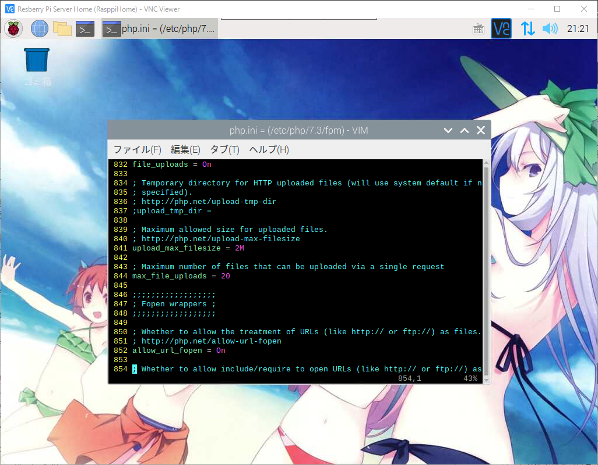

라즈베리파이 PHP에서 URL의 Image Download 해보기
라즈베리파이 PHP에서 URL의 Image Download 해보기
안녕하세요.
이번에 소개할 내용은 라즈베리파이와 PHP에서 URL의 Image Download 해보기 입니다.
개인서버 또는 웹호스팅 또는 라즈베리에 웹서버를 설치가 되신상태로 준비를 해주시기 바랍니다.
웹페이지를 오픈하실 상태가 되셨으면
그럼 개발을 하기위해서 Visual Studio Code(비주얼 스튜디오 코드)를 실행해 주시기 바랍니다.
Visual Studio Code(비주얼 스튜디오 코드)를 실행을 하셨으면
파일명을 url_image_download1.php 로 지정하시고 파일을 추가해 주시기 바랍니다.
코딩에 들어가기 앞서 우선 PHP의 설정을 확인해 주시기 바랍니다.
우선 라즈베리파이를 VNC로 접속을 하시고 터미널을 실행해 주세요.

아래의 명령어를 입력해주시고 PHP설정을 확인 하실수 있습니다.
1 | $ vi /etc/php/7.3/fpm/php.ini |
설정파일이 열리면 852라인까지 이동을 합니다.
1 | # 852라인에 allow_url_fopen의 ; 주석처리를 제거해 주세요. |

설정확인이 되셨으면 vi 에디터를 종료해 주시기 바랍니다.
그럼 다시 Visual Studio Code(비주얼 스튜디오 코드)로 돌아오셔서
file_get_contents 함수를 이용해서 아래의 URL의 이미지를 가져오기를 하겠습니다.
비주얼 스튜디오 코드에서 아래의 코드를 작성해 주시기 바랍니다.
1 |
|
저장하신 파일을 웹서버의 루트 경로에 올려주시기 바랍니다.
웹브라우져를 실행하신후 http://아이피주소 또는 도메인/url_image_download1.php 를 입력해 주세요.
OK가 출력이 되셨으면 파일이 저장이 되었는지 확인해 보도록 하겠습니다.
001.jpg 파일명을 다운로드가 된것을 확인이 되었습니다.
이번에는 fopen 함수를 이용한 다운로드를 해보도록 하겠습니다.
fopen도 file_get_contents와 사용법이 비슷해서 크게 어렵지 않게 사용하실수 있습니다.
그러면 비주얼 스튜디오를 실행을 해주시고 파일명을 url_image_download2.php 로 지정하시고 파일을 추가해 주시기 바랍니다.
아래와 같이 코딩을 해주시기 바랍니다.
1 |
|
이번에 다운로드할 이미지는 아래와 같습니다.
작성하신 소스파일을 웹서버에 올려주시기 바랍니다.
파일을 올려주셨으면 이제 웹브라우져를 실행하신후 http://아이피주소 또는 도메인/url_image_download2.php 를 입력해 주세요.
002.jpg파일명으로 정상적으로 다운로드 된것을 확인하실수 있습니다.
이렇게 해서 PHP를 이용한 외부 사이트의 이미지를 다운로드 하는 방법을 알아보았습니다만
만일 allow_url_fopen를 수정하기 어려우신 경우 다른방법으로 다운로드 하는 방법을 알려드리도록 하겠습니다.
이방법은 소스가 조금 길어지기는 하지만 거의 확실하게 받으실수 있겠습니다.
그러면 비주얼 스튜디오를 실행을 해주시고 파일명을 url_image_download3.php 로 지정하시고 파일을 추가해 주시기 바랍니다.
아래와 같이 코딩을 해주시기 바랍니다.
1 |
|
이번에 다운로드할 이미지는 아래와 같습니다.
작성하신 소스파일을 웹서버에 올려주시기 바랍니다.
파일을 올려주셨으면 이제 웹브라우져를 실행하신후 http://아이피주소 또는 도메인/url_image_download3.php 를 입력해 주세요.

003.jpg파일명으로 정상적으로 다운로드 된것을 확인하실수 있습니다.